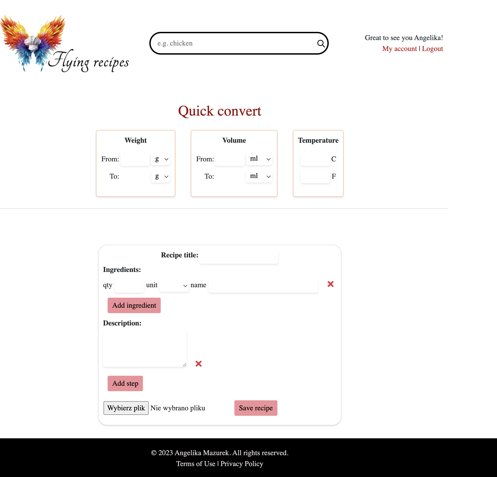
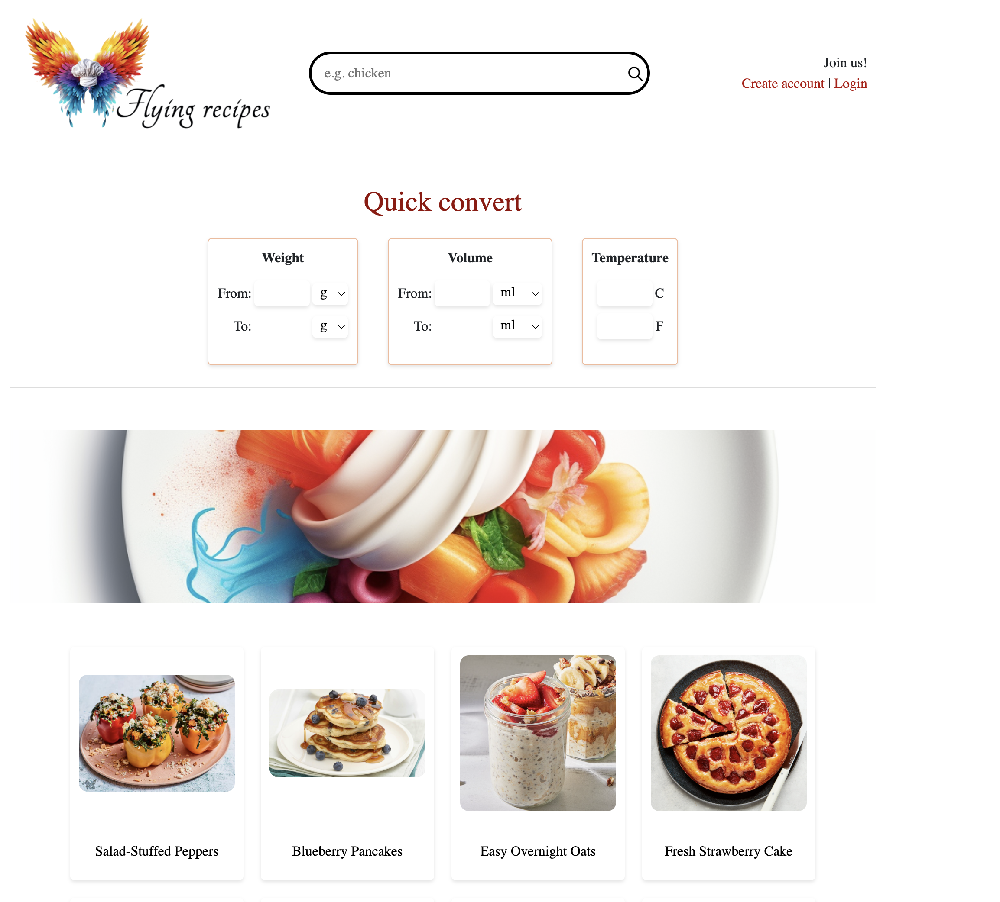
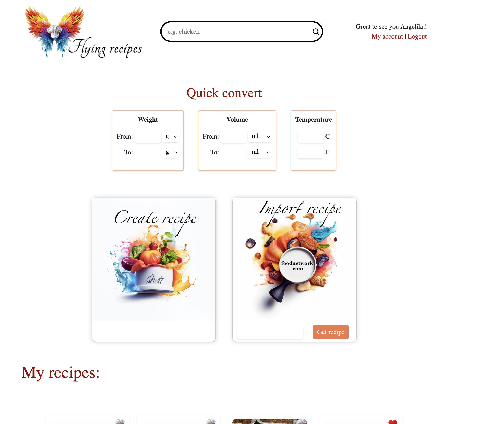

Flying Recipes: Cross-System Recipe Conversion & Scaling
A web application I designed and built from the ground up to reduce conversion friction between European recipes and U.S. cooking systems — from units and temperatures to baking pan sizes and ingredient scaling.
1. The Everyday Problem: Dual Conversion Barriers
European home cooks living in the U.S. often encounter friction when adapting familiar recipes to American units, temperatures, and pan sizes. The process typically requires managing three separate layers of mental translation simultaneously:
- Unit Conversion: Translating mass in grams to volumetric cups, ounces, and sticks of butter.
- Thermal Conversion: Converting European Celsius baking temperatures to U.S. Fahrenheit oven dials.
- Dimensional Pan Scaling: Recalculating ingredient quantities when switching between European metric bakeware and different U.S. baking pan sizes and shapes.
2. Automated Surface-Area Scaling Engine
Baking is sensitive to volume-to-surface-area ratios. When a recipe written for an 8-inch round cake pan is baked in a 9x13-inch rectangular pan, standard ingredient quantities yield a cake that is either undercooked or overly thin.
Flying Recipes calculates the surface area ratio between the original recipe pan and the user's target pan, then applies that multiplier across all ingredient quantities automatically:

- Geometric Area Calculation: Computes round (π × r²) and rectangular (width × length) pan areas dynamically.
- Instant Multiplier Application: Scales grams, ounces, and volumetric approximations in real time without page reloads.
- Temperature Alignment: Simultaneously calculates corresponding oven temperature equivalents.
3. Full-Stack Architecture & Data Modeling
I engineered the application backend from scratch to manage user profiles, recipe structures, and ingredient parsing:

- Application Logic: Built backend application logic, relational data models, and database workflows using Python, Flask, and PostgreSQL.
- Recipe Import Scraper: Engineered a web import workflow to extract unstructured recipe content from external websites and parse it into the application's structured database schema.
- State Management: Implemented client-side JavaScript to power instant unit switching and responsive recalculation without repeated round-trip database queries.
4. Designing for Kitchen-Context UX
Cooking is a high-distraction, hands-busy activity. Designing for the kitchen environment requires specific usability affordances that differ from standard desktop browsing:


- High-Contrast Typography: Optimized font sizing and hierarchy for visibility from counter-distance while cooking.
- Checkable Interactive Steps: Allows users to tap and track completed preparation steps with minimal cognitive load.
- Mobile-First Touch Targets: Generously sized buttons and input fields tailored for quick taps with messy fingers.
5. End-to-End Ownership & Technical Scope
Summary of direct execution across design, development, and project constraints:
| UX & Product Design | Engineering & Implementation |
|---|---|
|
|